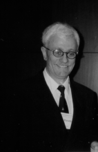

Please note: the AAS Obituaries are temporarily being hosted on this website while their full content is being ingested into the PubPub publishing platform newly adopted by the Bulletin of the American Astronomical Society. When the migration is complete, your existing links will take you to the final, migrated content. Contact peter.williams@aas.org with any questions.
Jan A. van Paradijs (1946-1999)
Jan van Paradijs, who died in Amsterdam on November 2, 1999, was one of the world's foremost high-energy astrophysicists. He will probably be best remembered for the discovery, on February 28, 1997, of the first optical afterglow of a cosmic gamma ray burst (GRB), which established the distant, extragalactic nature of these events and solved what had, for some 30 years, been a major problem in astrophysics. Thanks to this first optical identification, since followed by a dozen others, we now know that the GRBs, which last at most a few minutes, can produce an optical afterglow that lasts for days to weeks and sometimes even months, that some, at least, occur in very distant galaxies, and that they represent an enormous outburst of energy, with luminosities exceeding those of Type Ia supernovae, if the emission is isotropic. This was only one of his many discoveries in high energy astrophysics, which range from the first measurement of a mass of a neutron star, the X-ray pulsar Vela X-I (1975) to the proof that X-ray burst sources are neutron stars (1978) and are members of binary systems (1980, 1981), and the first spatially resolved spectroscopic mapping of an accretion disk (1993).
Van Paradijs was born on June 9, 1946, in Haarlem, The Netherlands, the eldest of seven children in a bricklayer's family. Thanks to the intervention of the headmaster of his Roman Catholic primary school, his parents sent him to a Haarlem HBS, a secondary school that prepares students for higher education. In 1963, he started studies in mathematics, physics, and astronomy at the University of Amsterdam. He excelled in all three fields, obtained his candidate degree in 1966, and graduated in 1970. In these years, Jan also excelled in basketball, playing in the top league in his home town, Haarlem.
From 1970 to 1975, van Paradijs carried out PhD research on the structure and chemical composition of cool giant stars, under the guidance of Prof. David Koelbloed. This included a major discovery in 1972: that what stellar spectroscopists call "micro-turbulence" (a mechanism that broadens spectral lines and increases their strength) is real hydrodynamical turbulence. He found this from the variation of micro-turbulent velocity during the pulsation cycle of Cepheid variables. The knowledge of stellar spectroscopy and photometry which he acquired during those years, as well as expertise in the theory of stellar atmospheres, provided him with a solid basis for his later research on X-ray binaries and neutron stars, to which he switched in 1975.
This field of study remained a life-long interest, and after his appointment in 1988 as a full professor, Jan organized many international meetings and summer schools on neutron star physics and X-ray astronomy, resulting in seven books, which regularly updated our knowledge in these fields.
From 1977 to 1979, van Paradijs was a postdoctoral fellow at MIT, where he became interested in X-ray bursts, powerful short-lived bursts of X-rays that had been discovered in globular clusters in 1975 by the Dutch ANS satellite. From these days dated a close friendship and collaboration with Walter Lewin, with whom he published more than 120 of his 400-plus scientific papers.
Soon Jan became an expert in ground-based observations of the optical flashes coming simultaneously with the X-rays from the bursts. His extensive experience in this field gave him a head start over others when, in 1996, the wide-field, hard X-ray camera of the BeppoSAX satellite began to provide, for the first time, prompt, accurate positions for gamma ray bursts. It was, therefore, no coincidence that van Paradijs, with his students Paul Groot and Titus Galama, was the first to detect the optical afterglow of a GRB and to establish its extragalactic nature.
On top of this came the discovery by Galama and Paul Vreeswijk of the peculiar supernova 1998bw, coinciding with the GRB of 25 April 1998. This may have been the first observed supernova in which a black hole was formed. It has been followed by two more GRB-SN coincidences discovered by Jan's collaborators Bloom, Reichart, and Galama.
In 1992, Jan married Greek astrophysicist-colleague Chryssa Kouveliotou of NASA's Marshall Space Flight Center in Huntsville, Alabama, and from 1993 he held a part-time professorship at the University of Alabama. He was co-author on her 1998 paper on the discovery of magnetars (neutron stars with magnetic fields of 1015 Gauss, one hundred times larger than previously known) just as she was co-author on his 1997 paper on the first GRB optical afterglow. During the last seven months of Jan's life, Chryssa essentially suspended her career to care for him, and, in the month before his death, he was able to finish an article for Science on the relation between GRBs and supernovae, which was published on 22 October 1999.
Van Paradijs guided the research of more than 15 PhD students in Amsterdam and Huntsville. He is survived by a son and a daughter from a previous marriage and by three grandchildren. Jan will be remembered as one of the greatest high energy astrophysicists of his time and as a fine colleague and friend.
Photo by Richard Dreiser, copyright by the American Astronomical Society
Obituary written by: E. P. J. van den Heuvel (University of Amsterdam)
BAAS Citation: BAAS, 2000, 32, 1690
SAO/NASA ADS Bibcode: 2000BAAS...32.1690V